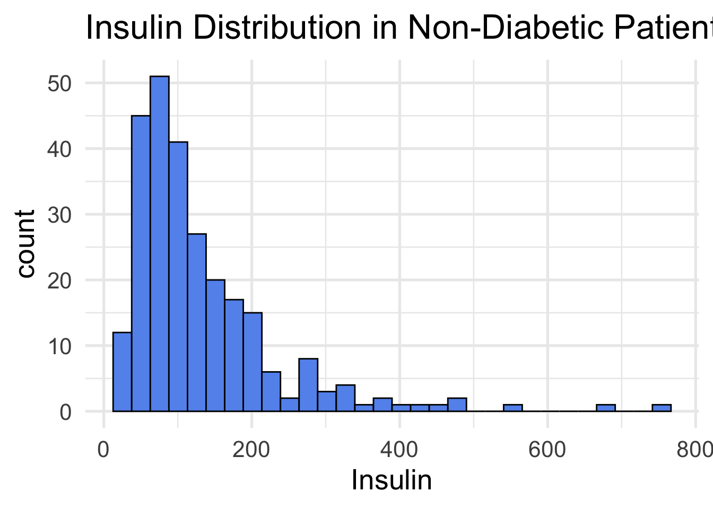
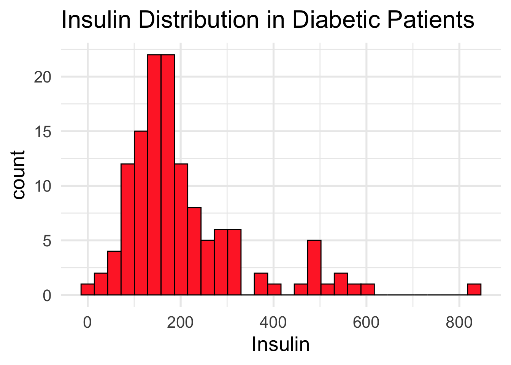
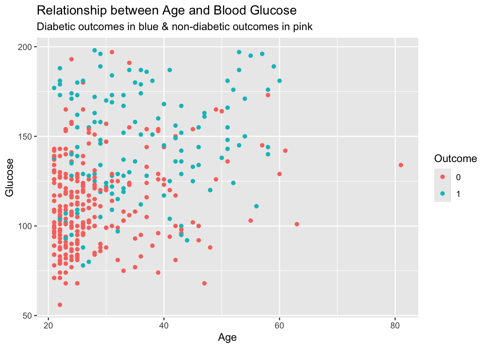
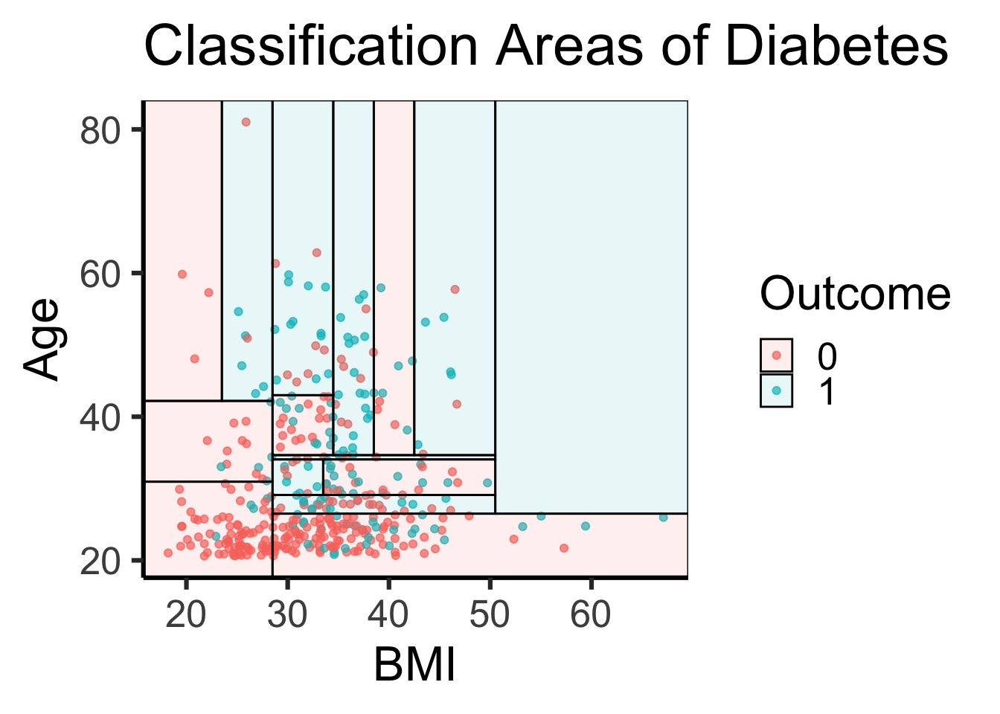

Predicting Diabetes with Various Modeling Techniques
Abstract
In this report we will explore the relationship between biological measurements and diabetes to build a model to predict diabetes outcome. We strive to identify which predictors are the most relevant when predicting diabetes and analyze multiple models to capture the best relationship between predictors and response. This has major applications for pre-identification and preventative treatments. To explore this we used a data set of 768 individuals with various variables such as age or blood pressure. In addition we explored five modeling techniques (Logistic, Naive Bayes, QDA, LDA, Tree) to perform this classification task best. Not only did we identify the optimal parameters and model type but we present an interactive app that allows users to explore the data and experiment with how different models and parameters influence model accuracy. We hope that identification of people at high risk for diabetes can lead to preventative care.
Introduction
Understanding the factors that play a major role in human health is extremely beneficial for both identification and preventative measures for diseases. One such disease, diabetes, impacts many people around the US and world. Typically associated with insulin resistance, diabetes can have major implications on health; in some cases even resulting in amputation of limbs or death. Diabetes is classified as 2 main forms, Type I and Type II diabetes. Type I diabetes is often genetic and arises earlier in life. Type II diabetes is majorly influenced by lifestyle choices such as poor diet, increased weight, or low exercise. If models could be built to predict those at risk for Type II diabetes this could have serious implications for preventative measures. This requires both an understanding of the best predictors for diabetes and which techniques best model the relationship between various predictors and diabetes outcome.
Questions of Interest
- What techniques best model the relationship between various predictors and diabetes outcome?
- What characteristics can be used to predict diabetes outcome?
Data
The data for this exploration was found on kaggle. The data consists of 768 cases with 8 parameters and if they developed diabetes Data columns can be seen below.
Pregnancies: To express the Number of pregnancies
Glucose: Blood glucose level
BloodPressure: Blood pressure measurement
SkinThickness: Thickness of skin
Insulin: Insulin level in blood
BMI: Body mass index measurment
DiabetesPedigreeFunction: Diabetes percentage using genetic factors
Age: Age in years
Outcome: Diabetes outcome - 1 is Yes and 0 is No
Tidying
The data set had a large amount of 0 values for variables such as skin thickness. Upon further investigation it appeared that null values in the data set had been filled in with 0’s. When modeling, this could cause serious skews in our results. To prevent this I removed all 0 values in categories where they had been applied as null (i.e., 0 pregnancies makes sense but having 0 BMI is a null value). The one problem with this tack is it limits the amount of data available. Initially the data set had 768 instances but after filtering all null Glucose, Blood Pressure, Skin Thickness, Insulin and BMI values the data set was left with 392 instances.
Model backgrounds
We implemented 5 modeling techniques in our shiny app to allow users different exploratory techniques. We have highlighted the basic outline of each model below. For each model (except parttree) the test rate error is computed in addition to model statistics output in the app. The parttree is displayed in a graphic visual with a predictor on each axis.
- Logistic model - Basic generalized linear model
- Naive Bayes model - Model uses Bayes theorem to predict diabetes outcome
- QDA - Quadratic discriminant analysis model
- LDA - Linear Discriminant analysis model
- Parttree- decision tree with 2 numeric predictors
Data Visualizations
The first tab in the shiny app allows the user to select a predictor and compare the distribution of diabetic and non-diabetic groups. Differences in the two distributions could indicate a strong predictor to be implemented in the other tabs. An example output of Insulin levels between the two groups is displayed below. Notice the higher insulin levels in the diabetic group (red) which could indicate insulin is a useful predictor (which it was in some models).
ggplot(data = data_neg, aes(x = Insulin)) +
geom_histogram(fill = "cornflowerblue", color = "black") +
labs(title = "Insulin Distribution in Non-Diabetic Patients") +
theme_minimal(base_size = 20)
ggplot(data = data_pos, aes(x = Insulin)) +
geom_histogram(fill = "firebrick1", color = "black") +
labs(title = "Insulin Distribution in Diabetic Patients") +
theme_minimal(base_size = 20)
Scatter plots can also give helpful insights into the relationship between predictors and their relationship with the response variable, diabetes. In the scatter plot below points are plotted using Age and Glucose. The points are colored by diabetic outcome and appear to have a general trend; many of the points with higher glucose and age over 30 have diabetes. It appears that those without diabetes are generally younger and have lower blood glucose. This is not a perfect relationship but indicates age and glucose could be effective predictors.
ggplot(data = data, aes(x = Age, y = Glucose, color = Outcome)) +
geom_point() +
labs(title = "Relationship between Age and Blood Glucose",
subtitle = "Diabetic outcomes in blue & non-diabetic outcomes in pink")
The shiny app lets the user experiment with various models. An example of the logistic glm model can be seen with all predictors in the data set used. This displays various metrics but for the “average everyday user” with no stats background the most important things to note is the Train Error rate (lower is better) and the stars in the model output (far right) with more stars indicating stronger predictors. This is similar output to the tabs containing the Naive Bayes, QDA and LDA models.
full.log <- glm(Outcome ~ ., data = data, family = binomial)
summary(full.log)
Call:
glm(formula = Outcome ~ ., family = binomial, data = data)
Coefficients:
Estimate Std. Error z value Pr(>|z|)
(Intercept) -1.004e+01 1.218e+00 -8.246 < 2e-16 ***
Pregnancies 8.216e-02 5.543e-02 1.482 0.13825
Glucose 3.827e-02 5.768e-03 6.635 3.24e-11 ***
BloodPressure -1.420e-03 1.183e-02 -0.120 0.90446
SkinThickness 1.122e-02 1.708e-02 0.657 0.51128
Insulin -8.253e-04 1.306e-03 -0.632 0.52757
BMI 7.054e-02 2.734e-02 2.580 0.00989 **
DiabetesPedigreeFunction 1.141e+00 4.274e-01 2.669 0.00760 **
Age 3.395e-02 1.838e-02 1.847 0.06474 .
---
Signif. codes: 0 '***' 0.001 '**' 0.01 '*' 0.05 '.' 0.1 ' ' 1
(Dispersion parameter for binomial family taken to be 1)
Null deviance: 498.10 on 391 degrees of freedom
Residual deviance: 344.02 on 383 degrees of freedom
AIC: 362.02
Number of Fisher Scoring iterations: 5 folds <- create_folds(data$Outcome, k = 5)
error <- rep(0, 5)
i <- 1
for (train in folds) {
model <- glm(Outcome ~ ., data = data[train,], family = binomial)
probabilities <- predict(model, newdata = data[-train,], type = "response")
predictions <- ifelse(probabilities > 0.5, "1", "0")
error[i] <- mean(predictions != data[-train,]$Outcome)
i <- i + 1
}
text <- print(paste0("Train Error Rate: ", round(mean(error), digits = 5)))[1] "Train Error Rate: 0.21955"The Parttree tab in the shiny app lets the user look at how a decision tree classifies two predictors. This plot overlays the true data points with the visual to highlight how the data influences the model’s area distribution. Below is a static output using BMI and Age as predictors. Areas and points in blue represent diabetic outcome while red is non-diabetic outcomes.
data$Outcome = as.factor(data$Outcome)
## Build our tree using parsnip (but with rpart as the model engine)
tree =
decision_tree() |>
set_engine("rpart") |>
set_mode("classification") |>
fit(Outcome ~ BMI + Age, data = data)
## Plot the data and model partitions
data |>
ggplot(aes(x = BMI, y = Age)) +
geom_jitter(aes(colour = Outcome), alpha = 0.7) +
geom_parttree(data = tree, aes(fill = Outcome), alpha = 0.1) +
labs(x = "BMI",
y = "Age",
title = "Classification Areas of Diabetes") +
theme_classic(base_size = 24)
Shiny App Findings
The shiny app has 5 modeling methods and allows the user to play around with the relationship between various predictors and diabetic outcome. I used the app to identify combinations and applied them across the models to find the optimal model for predicting diabetes. I did not use the Parttree model in this because while it is an effective visual I did not calculate a test error. Between the other 4 models all had very similar baselines around 22% test error with the logistic model having the lowest (21.438%) and QDA the highest (23.248%). I then changed the models to have the lowest test training error. Not all models had the same predictor to minimize the error. The best model configuration are listed below with their test error rate.
- Logistic Model - Glucose, Insulin, BMI, Diabetes Pedigree Function, Age - 20.443%
- Naive Bayes - Glucose, Diabetes Pedigree Function, Age - 20.647%
- LDA - Glucose, Skin Thickness, Insulin, BMI, Diabetes Pedigree Function, Age - 20.677%
- QDA - Pregnancies, Glucose, Skin Thickness, Insulin, BMI, Age - 21.18%
Glucose and age are used in all optimal model configurations as predictors. On top of this the top 3 models also all share the diabetes pedigree function. This indicates that age, blood glucose levels and genetic factors are three big predictors in diabetes outcome (of the predictors in our data set). Furthermore we can see that the logistic model has the lowest error rate. With that in mind, all 4 models are extremely close and test error can fluctuate due to the random sampling of test vs train data. There is some indication that the logistic model is the strongest but cannot be said definitively that it is better then the others.
Future Work
As is generally the case, I wish I had more data to work with both in terms of total cases but also measured values such as resting heart rate or weekly exercise. Furthermore I am curious to see how many of the diabetic cases are type I vs type II diabetes. This could play a major role in our modeling as type I diabetes is genetic thus influencing the importance of the diabetes pedigree function. With an increase in data we could also expand to more concrete conclusions and see if the trends we noticed with glucose and age remain true. On top of this, with more data, shallow machine learning models can be implemented and tested. The goal of this project was to implement modeling techniques to identify predictors for diabetes. This has major implications on identifying those at risk and intervening before it arises. This same idea can be applied to virtually all chronic diseases including cancer. Early identification could have massive health benefits. Moving forward I would love to find data sets regarding other diseases and see if strong models could be built for them as well. Upon identification of strong predictors and building of models I think an app where a user enters their measured values (such as BMI, Blood Glucose, Age, Weight) and the model then analyzes which diseases one is ar risk for could have major benefits. This could also incorporate sources to various health platforms with preventative plans such as diet changes. If implemented properly this could alert people of there increased risk and mitigate it before it is too late. The are a handful of limitations within my Shiny app. The largest being that effective visuals for complex models do not exist. Because of this I outputted model summary and test error but would be much better conveyed if there was a visual method like with Parttree. This would allow for more clear conveying of what the model does in particular for those without a statistics background. Within the Parttree visual there is some insights that can be gained in various configurations. With that in mind there are also some configurations that create meaningless classification areas just do to a lack of data or unreal data range. The parttree model can only be applied within the context of our data. What I mean by this is while Parttree might indicate someone with a BMI of 60 and 80 years old is not going to get diabetes, there was no data points for it to train on in this way and is thus generalizing trends and expanding classification areas to regions with less data. This is something to keep in mind on some regions of the graph (particularly the upper right where values are very high and data points are scarce).